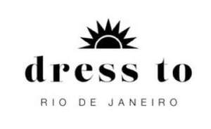

Trade Mark Journal No.2025/021 23 May 2025
UK00004202860 13 May 2025 (25,35)

- Class 25
- Clothing; footwear; headwear; bathrobes; neck scarves; clothing, namely jackets or outer jackets; bath clothes, namely, suits, trunks, sandals, slippers, shorts; t-shirts; gymnastics clothes, namely, gym tights and leotards; jumpsuits; knitwear, namely, sweaters, dresses, tops, bottoms, jackets, hats; beanie hats with earflaps; hats with earflaps; overcoats; gaiters, namely, neck gaiters, leg gaiters, boot gaiters; shirts; false collars in the nature of removable collars; shirt cuffs; gym clothes, namely, sweatsuits, pants, shorts, shirts; imitation leather clothing, namely, jackets, pants, belts, shoes; bathing costumes; shorts; coats; vests; socks; lapel scarfs; pullovers; sweaters; suits; blazers; scarves; kilt flashes in the nature of scarves used with shirts; gloves; shorts for sports; bikinis; swimsuits; leather clothing, namely, leather pants, leather jackets, leather shoes; skirts; collars; beanies; waterproof clothing, namely, jackets, footwear, pants, shirts; dressing gowns; pyjamas; suspenders; uniforms; bandanas; caps being headwear; coats; shirt yokes; complete bathing suits; robes; swim trunks; ties as clothing.
- Class 35
- Retail and online retail services in connection with the sale of bed, table and bath goods; retail and online retail services in connection with the sale of articles and products made of leather and imitations of leather, namely, leather pants, leather boots, leather jackets, leather coats; retail and online retail services in connection with the sale of imitation leather; retail and online retail services in connection with the sale of clothing made from animal skins; retail and online retail services in connection with the sale of sports clothing; retail and online retail services in connection with the sale of footwear; retail and online retail services in connection with the sale of buttons, haberdashery accessories; retail and online retail services in connection with the sale of jewellery; retail and online retail services in connection with the sale of headwear; retail and online retail services in connection with the sale of clothing and clothing accessories; retail and online retail services in connection with the sale of yarns and fibres for textile use; retail and online retail services in connection with the sale of cutlery.
DRESS TO SERVICOS DE FRANQUIA LTDA
Representative: HGF Limited